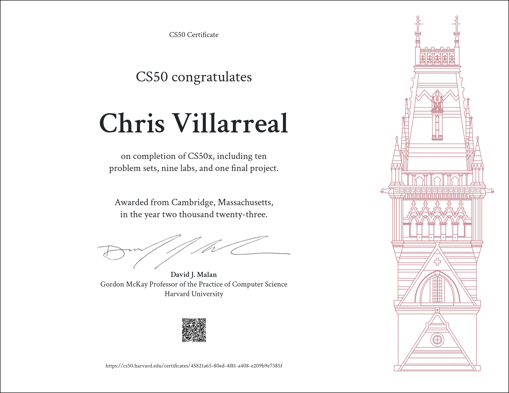

CS50x stands as a renowned computer science course offered by Harvard University, and it’s available for free on edX. Officially named “CS50’s Introduction to Computer Science,” this course aims to offer a comprehensive introduction to the world of computer science. It caters to both newcomers without prior programming experience and those who have some background in the field. As someone who’s always eager to learn, I’ve had this course on my to-do list since 2017. Finally, this year, I found the time to dive in, and after several months on and off, I’ve successfully completed the course!
CS50x delves into a wide array of computer science topics, including programming in C, Python, and SQL, as well as exploring data structures, algorithms, and web development. It equips you with a solid foundation in computer science concepts and problem-solving skills. I even had the chance to work with Scratch during the first week, which turned out to be quite interesting and surprisingly useful.
The course primarily consists of weekly video lectures and online notes, all expertly delivered by the course instructor, David J. Malan. He’s known for his engaging teaching style and his knack for making complex topics accessible. He’s undoubtedly passionate and covers a lot of material quite swiftly. I needed more than a few cups of coffee to keep up!
Following the lectures and notes, CS50x presents a series of challenging problem sets and labs to test and apply what you’ve learned. These problem sets vary in complexity, and my personal favorite was “Bulbs” in week 2, which I even wrote a blog post about. One of the most inventive challenges, in my opinion, was “FiftyVille,” where I had to use SQL database queries to solve a crime by piecing together clues. All solutions are automatically evaluated, and the grading system is both fair and challenging.
Upon completing and submitting all my coursework, I received a certificate of completion, a satisfying recognition of my hard work. The course is accessible, informative, and, quite frankly, a lot of fun! I wholeheartedly recommend it to fellow learning enthusiasts.